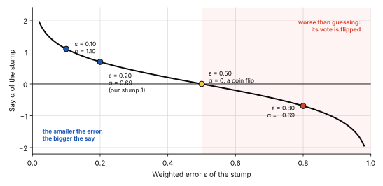
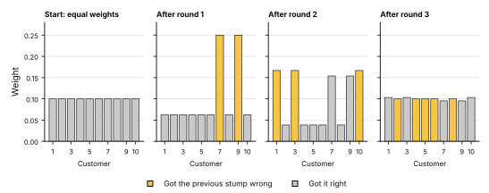

Tree-based models
AdaBoost Explained: How Models Learn from Their Mistakes
A single decision tree is often too simple to make reliable predictions. AdaBoost, short for Adaptive Boosting, takes a different approach: it combines many simple models into one stronger model.
The idea is straightforward. Each new tree focuses more on the observations that previous trees classified incorrectly. By repeatedly adjusting which observations matter most, AdaBoost gradually improves its predictions.
In this tutorial, we will work through the algorithm using ten fictional customers of an online shop. Our task is to predict whether a customer will place another order within 60 days. By the end, you will also implement AdaBoost in Python.
This is the first article in a three-part series on boosting. For a broader introduction, see Boosting: Learning from the Mistakes of Previous Trees. If you are new to decision trees, start with Decision Trees.
In this article
The Setup: Stumps and Ten Customers
Weak Learners and Decision Stumps
A weak learner is a model that performs only slightly better than random guessing. AdaBoost typically uses a very simple decision tree called a decision stump.
A decision stump is a tree with just one question and two possible outcomes. For example: Was the order delivered within five days?
- Yes: predict that the customer will order again.
- No: predict that the customer will not order again.
That is the entire model. It makes a prediction based on just one feature.
A stump is deliberately simple. Consider the full dataset of 5,000 simulated customers used in this series. The best individual stump uses delivery time but still predicts “no repeat order” for every customer. It correctly classifies only 63.4% of the test customers, no better than simply predicting the majority class. On its own, this stump has limited predictive value.
AdaBoost makes these simple models useful by combining them. It does this through two mechanisms:
- Sample weights: Each customer receives a weight indicating how much attention the algorithm should pay to that observation. Incorrectly classified customers receive more weight, making them more important in the next round.
- Model weights: Each stump receives a weight (its say) based on its classification performance. More accurate stumps have a greater influence on the final prediction.
The result is a sequence of simple models, each learning from the mistakes of its predecessors.
Ten Customers with Equal Weights
Let’s start with our ten fictional customers. Chart 1 shows each customer as a point:
- The x-axis represents delivery time in days.
- The y-axis represents the value of the customer’s first basket in euros.
- Blue circles indicate customers who ordered again within 60 days.
- Red squares indicate customers who did not order again.
Two customers stand out: customers 7 and 9. Both waited longer than five days for delivery but still placed another order.

Before AdaBoost trains its first stump, all ten customers have equal importance. Each observation receives a sample weight of:
wi = 110 = 0.10
Together, the weights add up to 1. This means every customer contributes equally to the learning process. The left panel of Chart 1 illustrates these initial weights: all ten markers have the same size.
Now let’s apply our first decision stump: Was the order delivered within five days? The stump predicts a repeat order for delivery times of five days or less and no repeat order for delivery times longer than five days. This rule correctly classifies eight customers but makes two mistakes: customers 7 and 9.
The right panel shows what happens next. AdaBoost increases the weights of these two incorrectly classified customers. Their markers become larger, while the weights of correctly classified customers become smaller.
Why does this matter? The next stump will pay more attention to customers 7 and 9. Instead of treating all observations equally, AdaBoost now encourages the next model to focus on the cases the previous model failed to explain. This is how the algorithm gradually learns from its mistakes.
Round 1: Error, Say and New Weights
Round 1: The First Stump and Its Weighted Error
The first stump looks for the single question that separates the customers best. Here it is “Was the package delivered within 5 days?”: yes means it predicts a repeat order, no means it predicts none. It is right for eight customers and wrong for customers 7 and 9.
To judge a stump, we add up the weights of the customers it gets wrong. This number is called the weighted error and is written ε (epsilon):
ε = sum of the weights of the customers the stump gets wrong = 0.10 + 0.10 = 0.20
Right now every customer counts the same, so ε is just the share of wrong answers: 2 of 10 customers, or 0.20. In later rounds the weights differ, and getting a high-weight customer wrong adds more to ε than getting a low-weight customer wrong. A small ε means the stump is usually right where it matters, so we can trust it more.
Alpha: How Much Say Does a Stump Get?
A stump’s vote is its answer for a customer: +1 (repeat order) or −1 (no repeat order). Its say is how much that answer counts. The better a stump is, the more say it should get. A stump that is almost always right should dominate the final decision, and a stump that is no better than a coin flip should have no influence at all. The say is written α (alpha):
α = 12 × ln(1 − εε) = 12 × ln(0.800.20) = 12 × ln 4 = 0.69
The formula looks strange at first, but each part has a job. The fraction (1 − ε) ÷ ε compares how much weight the stump gets right with how much it gets wrong. Here that is 0.80 to 0.20, so the stump is right four times as often as it is wrong. The natural logarithm ln turns this ratio into a score that is 0 when the ratio is 1 (a coin flip), positive when the stump is right more often than wrong, and negative when it is wrong more often. The factor ½ comes out of the mathematics behind AdaBoost, which chooses α so that the exponential loss of the whole model becomes as small as possible. It makes the weight update in the next section come out cleanly.

- ε close to 0: the stump is almost always right, so α is large.
- ε = 0.5: the stump is a coin flip, so α = 0 and it gets no say.
- ε above 0.5: the stump is worse than guessing, so α is negative and its vote is flipped.
The value α = 0.69 is used twice: as the stump’s say in the final vote, and to decide how the customer weights change next.
Why the Weights Are Updated with Exponentials
After a stump, the weights have to change: customers it got wrong should count more, customers it got right should count less. We need a multiplier with a few properties. It must always be positive, because a weight can never be negative. It must be above 1 for a mistake and below 1 for a correct answer. It must be exactly 1 when the stump is a coin flip (α = 0), because then there is nothing to learn from it. And it must change more when the stump has a larger say.
The exponential function ex has exactly these properties. It is never negative, it equals 1 at x = 0, it is above 1 for positive x and below 1 for negative x. AdaBoost therefore multiplies every weight by eα if the stump is wrong for that customer and by e−α if it is right. In one formula, with the vote h and the real answer y both written as +1 or −1:
new weight = old weight × e−α × y × hThe product y × h is +1 when the vote is right, which gives e−α, and −1 when it is wrong, which gives eα.
With α = 0.69 the multipliers are e0.69 = 2 for the two wrong customers and e−0.69 = 0.5 for the eight right ones. The weights are doubled or halved. This choice has a useful side effect. The two wrong customers had a total weight of 0.20 and now have 0.20 × 2 = 0.40. The eight right customers had 0.80 and now have 0.80 × 0.5 = 0.40. Wrong and right now carry the same total weight. For the new weights, the first stump is therefore no better than a coin flip, so the next stump cannot simply repeat it and has to find a new question.
Updating and Normalizing the Weights
- Customers 7 and 9 (wrong): 0.10 × 2 = 0.20 each.
- The other eight (right): 0.10 × 0.5 = 0.05 each.
These numbers add up to 2 × 0.20 + 8 × 0.05 = 0.80, not 1. The weights are meant to be shares of a whole, so we normalize them: every weight is divided by their sum, here 0.80. Dividing all weights by the same number keeps their proportions and makes the total 1 again.
normalized weight = new weight ÷ sum of all new weights
Customers 7 and 9 get 0.20 ÷ 0.80 = 0.25, and each of the other eight gets 0.05 ÷ 0.80 = 0.0625. Check: 2 × 0.25 + 8 × 0.0625 = 1. Two customers out of ten now carry half of the total weight, which is the right panel of Chart 1.
Rounds 2 and 3 and the Final Vote
Rounds 2 and 3
Round 2 repeats the recipe on the new weights. The best stump now asks “Is the first basket at most €70?”. It gets customers 7 and 9 right, but is wrong for customers 1, 3 and 10, the customers the first stump handled well. Their weights were small, so the weighted error is 3 × 0.0625 = 0.1875 and the stump gets α = 0.73. After reweighting and normalizing, customers 1, 3 and 10 carry about 0.17 each, customers 7 and 9 about 0.15, and the other five about 0.04.
Round 3 gives a third stump, “Is the first basket above €52.50?”, with ε = 0.19 and α = 0.72. On its own it is right for only 5 of 10 customers, but it is right for the ones that carry weight.

Weighted Voting: The Final Prediction
The final prediction is a weighted vote. Each stump votes +1 or −1, its vote is multiplied by its say α, and the sign of the sum decides:
Score = 0.69 × h1 + 0.73 × h2 + 0.72 × h3A positive score predicts a repeat order, a negative score predicts none.
- Customer 7 (8 days, €65): the stumps vote −1, +1, +1. Score = −0.69 + 0.73 + 0.72 = +0.76, so the model predicts a repeat order, which is correct.
- Customer 3 (9 days, €45): the stumps vote −1, +1, −1. Score = −0.69 + 0.73 − 0.72 = −0.68, so the model predicts no repeat order, which is also correct.

All ten customers are classified correctly. This says little about new customers yet, because these are the customers the stumps were trained on. With only ten customers it is also easy. On real data AdaBoost combines hundreds of stumps, and the next section shows how.
AdaBoost in Python
From scratch on the ten customers
The code below repeats exactly what we did by hand. In every round it tries every question of the form “feature ≤ threshold” and picks the one with the smallest weighted error. It then calculates α, updates the weights and normalizes them.
import numpy as np
days = np.array([2, 7, 9, 8, 8, 9, 8, 8, 9, 3])
basket = np.array([95, 75, 45, 85, 75, 95, 65, 95, 60, 95])
y = np.array([1, -1, -1, -1, -1, -1, 1, -1, 1, 1]) # +1 = ordered again
X = np.column_stack([days, basket])
names = ["delivery days", "first basket"]
w = np.full(10, 0.1) # each customer starts with 0.10
stumps = []
for round_no in range(1, 4):
best = None
for f in range(2): # try both features
values = np.unique(X[:, f])
for t in (values[:-1] + values[1:]) / 2: # thresholds in between
for sign in (1, -1): # which side predicts "repeat"
pred = np.where(X[:, f] <= t, sign, -sign)
eps = w[pred != y].sum() # weighted error
if best is None or eps < best[0] - 1e-12:
best = (eps, f, t, sign, pred)
eps, f, t, sign, pred = best
alpha = 0.5 * np.log((1 - eps) / eps) # the say of the stump
w = w * np.exp(-alpha * y * pred) # wrong: x e^a, right: x e^-a
w = w / w.sum() # normalize: weights add up to 1
stumps.append((alpha, f, t, sign))
print(f"Round {round_no}: {names[f]} <= {t}",
f"eps={eps:.4f}", f"alpha={alpha:.4f}")
score = sum(a * np.where(X[:, f] <= t, s, -s) for a, f, t, s in stumps)
print("all correct:", (np.sign(score) == y).all())The output matches the hand calculation: round 1 asks about delivery days ≤ 5 with ε = 0.2000 and α = 0.6931, round 2 asks about a first basket ≤ 70 with ε = 0.1875 and α = 0.7332, round 3 asks about a first basket ≤ 52.5 with ε = 0.1923 and α = 0.7175, and all ten customers are classified correctly.
With scikit-learn on the full customer table
For real data you do not write the loop yourself. With the table prepared as in Random Forest: Why Many Trees Beat One (3,750 customers for training, 1,250 for testing), the model takes three lines. By default, AdaBoostClassifier uses stumps as weak learners.
from sklearn.ensemble import AdaBoostClassifier
from sklearn.metrics import roc_auc_score
ada = AdaBoostClassifier(n_estimators=50, random_state=42) # 50 stumps
ada.fit(X_train, y_train)
print("accuracy:", ada.score(X_test, y_test))
proba = ada.predict_proba(X_test)[:, 1]
print("AUC:", roc_auc_score(y_test, proba))With 50 stumps the model reaches an accuracy of 78.3% and an AUC of 0.837 on the test customers, against 63.4% for always predicting “no repeat order”. The AUC is a score from 0.5 (guessing) to 1 (perfect) that rates how well the model ranks the customers who will order again above those who will not. More stumps are not automatically better:
| Number of stumps | Test accuracy | AUC |
|---|---|---|
| 1 | 63.4% | 0.500 |
| 10 | 79.1% | 0.832 |
| 50 | 78.3% | 0.837 |
| 500 | 78.6% | 0.836 |
Most of the gain arrives with the first ten stumps. After that, accuracy and AUC hardly move on this table. The setting learning_rate (default 1.0) shrinks the say of every stump, which makes learning slower and usually needs more stumps.
If you print ada.estimator_weights_ for the ten customers, you get 1.39, 1.47 and 1.44, exactly twice our 0.69, 0.73 and 0.72. scikit-learn leaves out the factor ½. The weighted errors are identical (0.20, 0.1875, 0.1923) and so are the predictions, because doubling every say changes no sign and the weight update ends up the same.
Strengths and Limits
AdaBoost is easy to understand and has few settings. It works with any model that can handle weights, and in practice a small number of stumps is often enough. Its weak spot follows from the way it works: a customer who keeps being predicted wrongly keeps gaining weight. If that customer is not a pattern but just noise, for example a wrong label or a one-off order, the stumps start to bend toward that customer. A second limit is that the stumps are built one after another, so they cannot be trained in parallel like the trees of a random forest.
The next article looks at gradient boosting, which corrects mistakes differently: instead of reweighting customers, it measures each mistake directly. The two methods are closer than they look. AdaBoost can be seen as gradient boosting with a particular way of measuring the error, the exponential loss.
Frequently Asked Questions
What is the difference between a weak learner and a strong learner?
A weak learner is only slightly better than guessing, like a single stump. A strong learner is accurate on its own. AdaBoost combines many weak learners into one strong one.
Why is AdaBoost called adaptive?
Each new stump adapts to the mistakes of the earlier ones. The weights of the customers that were predicted wrongly go up, so the next stump is trained on a problem that has changed.
Does AdaBoost only work with stumps?
No. Any model that can work with sample weights can be used, for example a decision tree with two or three levels. Stumps are the default because they are fast and hard to overfit.
Is AdaBoost better than gradient boosting?
Not in general. On our customer table AdaBoost reaches 78.3% accuracy and an AUC of 0.837, gradient boosting 79.4% and 0.865. Gradient boosting is more flexible and is what libraries such as XGBoost build on, while AdaBoost is the simplest way to see boosting at work.
Key takeaway
AdaBoost builds one-question trees (stumps) in a row. After each stump, it multiplies the weight of every customer it got wrong by eα and every customer it got right by e−α, then normalizes, so the next stump has to care about the earlier mistakes. The final prediction is a vote in which each stump’s answer counts as much as its say α, which grows as its weighted error ε shrinks.
Related posts
- Boosting: Learning from the Mistakes of Previous Trees The overview of AdaBoost, gradient boosting and XGBoost.
- Decision Trees: Splitting Data into Clear Decisions The trees that stumps are made from.
- Random Forest: Why Many Trees Beat One The other way to combine many trees.